import pandas as pd
import numpy as np
import seaborn as sns
import matplotlib.pyplot as plt
from sklearn.model_selection import train_test_split, KFold, cross_val_score
from sklearn.metrics import mean_squared_error
from sklearn.tree import DecisionTreeClassifier, DecisionTreeRegressor, plot_tree
from sklearn.ensemble import RandomForestRegressor
from sklearn.model_selection import GridSearchCV
import xgboost as xgb
from xgboost import XGBRegressor, plot_importance
from sklearn.inspection import PartialDependenceDisplay, plot_partial_dependenceTree-based Models
NBC Shows; Boston Housing Markets
Libraries and Modules
NBC Data
nbc = pd.read_csv("https://bcdanl.github.io/data/nbc_show.csv")
demog = pd.read_csv("https://bcdanl.github.io/data/nbc_demog.csv")
nbc| Show | Network | PE | GRP | Genre | Duration | |
|---|---|---|---|---|---|---|
| 0 | Living with Ed | HGTV | 54.0000 | 151.0 | Reality | 30 |
| 1 | Monarch Cove | LIFE | 64.6479 | 375.5 | Drama/Adventure | 60 |
| 2 | Top Chef | BRAVO | 78.5980 | 808.5 | Reality | 60 |
| 3 | Iron Chef America | FOOD | 62.5703 | 17.3 | Reality | 30 |
| 4 | Trading Spaces: All Stars | TLC | 56.0000 | 44.1 | Reality | 60 |
| 5 | Lisa Williams: Life Among the Dead | LIFE | 56.2056 | 382.6 | Reality | 60 |
| 6 | Project Runway | BRAVO | 83.4243 | 826.2 | Reality | 60 |
| 7 | Next | MTV | 30.0000 | 7.5 | Reality | 30 |
| 8 | House Hunters | HGTV | 60.5455 | 320.8 | Reality | 30 |
| 9 | My Super Sweet 16 | MTV | 47.9324 | 213.7 | Reality | 30 |
| 10 | What Not to Wear | TLC | 76.5668 | 508.9 | Reality | 60 |
| 11 | Real World XVIII Denver Launch | MTV | 76.0000 | 629.8 | Reality | 30 |
| 12 | American Chopper | DSC | 61.2437 | 495.5 | Reality | 60 |
| 13 | Monk | USA | 81.2222 | 1994.3 | Drama/Adventure | 60 |
| 14 | The Closer | TNT | 77.5441 | 2300.3 | Drama/Adventure | 60 |
| 15 | Veronica Mars | CW | 79.7387 | 238.9 | Drama/Adventure | 60 |
| 16 | Supernatural | CW | 79.6464 | 232.4 | Drama/Adventure | 60 |
| 17 | Smallville | CW | 80.1307 | 406.0 | Drama/Adventure | 60 |
| 18 | Cops | FOX | 64.2912 | 113.5 | Reality | 30 |
| 19 | Friday Night Lights | NBC | 73.1257 | 1403.6 | Drama/Adventure | 60 |
| 20 | Close to Home | CBS | 73.3197 | 675.1 | Drama/Adventure | 60 |
| 21 | Las Vegas | NBC | 78.1208 | 348.8 | Drama/Adventure | 60 |
| 22 | 30 Rock | NBC | 82.5494 | 780.5 | Situation Comedy | 30 |
| 23 | America's Next Top Model | CW | 72.6376 | 243.4 | Reality | 60 |
| 24 | The War at Home | FOX | 81.6624 | 121.5 | Situation Comedy | 30 |
| 25 | Law and Order: Criminal Intent | NBC | 71.0557 | 1148.6 | Drama/Adventure | 60 |
| 26 | The Apprentice: Los Angeles | NBC | 79.5046 | 485.1 | Reality | 30 |
| 27 | The Unit | CBS | 80.2456 | 1044.8 | Drama/Adventure | 60 |
| 28 | Cold Case | CBS | 78.1187 | 1497.2 | Drama/Adventure | 60 |
| 29 | Bones | FOX | 78.9045 | 893.6 | Drama/Adventure | 60 |
| 30 | The Biggest Loser | NBC | 64.3575 | 647.9 | Reality | 60 |
| 31 | Shark | CBS | 75.5916 | 1738.0 | Drama/Adventure | 60 |
| 32 | My Name is Earl | NBC | 83.2328 | 647.9 | Situation Comedy | 30 |
| 33 | Ugly Betty | ABC | 74.7037 | 1356.0 | Drama/Adventure | 60 |
| 34 | Two and a Half Men | CBS | 86.7397 | 972.5 | Situation Comedy | 30 |
| 35 | Lost | ABC | 89.2948 | 1593.1 | Drama/Adventure | 60 |
| 36 | Dancing with the Stars | ABC | 67.1338 | 920.7 | Reality | 30 |
| 37 | CSI: Crime Scene Investigation | CBS | 78.8984 | 1815.8 | Drama/Adventure | 60 |
| 38 | Heroes | NBC | 84.0252 | 2773.8 | Drama/Adventure | 60 |
| 39 | Grey's Anatomy | ABC | 83.7930 | 1781.5 | Drama/Adventure | 60 |
# Define custom colors for each genre
custom_palette = {
"Reality": "red",
"Drama/Adventure": "blue",
"Situation Comedy": "green"
}
# Plot
sns.lmplot(
data=nbc, x="GRP", y="PE", hue="Genre",
palette=custom_palette,
ci=None, aspect=1.2, height=6,
markers="o",
scatter_kws={"s": 50},
line_kws={"linewidth": 2}
)
plt.title("Scatter Plot with Linear Fit of GRP vs PE by Genre")
plt.xlabel("GRP")
plt.ylabel("PE")
plt.tight_layout()
plt.show()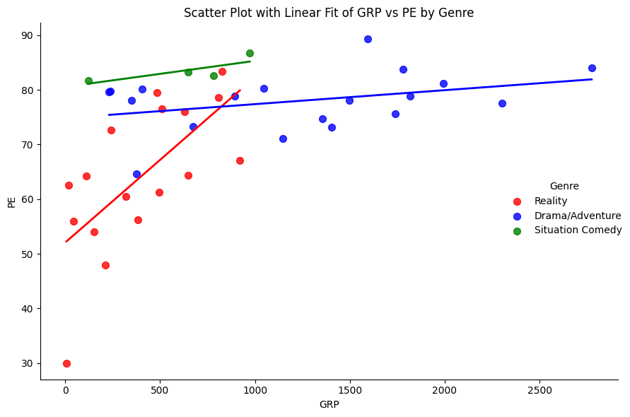
demog| Show | TERRITORY.EAST.CENTRAL | TERRITORY.NORTHEAST | TERRITORY.PACIFIC | TERRITORY.SOUTHEAST | TERRITORY.SOUTHWEST | TERRITORY.WEST.CENTRAL | COUNTY.SIZE.A | COUNTY.SIZE.B | COUNTY.SIZE.C | ... | FEMALE.HOH | INCOME.30.74K. | INCOME.75K. | HISPANIC.ORIGIN | NON.HISPANIC.ORIGIN | HOME.IS.OWNED | HOME.IS.RENTED | PC.NON.OWNER | PC.OWNER.WITH.INTERNET.ACCESS | PC.OWNER.WITHOUT.INTERNET.ACCESS | |
|---|---|---|---|---|---|---|---|---|---|---|---|---|---|---|---|---|---|---|---|---|---|
| 0 | Living with Ed | 6.1611 | 19.0758 | 28.7915 | 17.5355 | 7.7014 | 20.7346 | 48.6967 | 31.3981 | 13.3886 | ... | 61.6114 | 31.0427 | 56.8720 | 9.5972 | 90.1659 | 76.8957 | 22.9858 | 12.5592 | 77.9621 | 9.3602 |
| 1 | Monarch Cove | 10.3289 | 14.0132 | 11.1184 | 37.1053 | 15.7237 | 11.6447 | 35.1316 | 32.2368 | 15.9211 | ... | 61.3158 | 43.5526 | 20.4605 | 12.3026 | 87.6974 | 71.5132 | 28.6184 | 21.8421 | 62.9605 | 15.1974 |
| 2 | Top Chef | 7.5190 | 23.8271 | 19.6066 | 17.8652 | 14.1160 | 16.9637 | 48.2483 | 31.3255 | 13.3579 | ... | 51.3829 | 39.0699 | 44.0484 | 11.1248 | 88.8547 | 65.7242 | 34.2348 | 13.5218 | 80.1475 | 6.3716 |
| 3 | Iron Chef America | 12.8118 | 25.1617 | 21.7123 | 20.1879 | 10.5482 | 9.6397 | 46.9664 | 30.3819 | 12.5038 | ... | 48.7989 | 44.3640 | 44.6104 | 8.7003 | 91.2997 | 74.8075 | 25.1925 | 8.6849 | 84.7244 | 6.5445 |
| 4 | Trading Spaces: All Stars | 11.9926 | 15.1292 | 17.1587 | 16.7897 | 16.2362 | 22.6937 | 28.5978 | 37.6384 | 16.7897 | ... | 58.1181 | 37.2694 | 47.0480 | 9.9631 | 90.2214 | 75.0923 | 24.9077 | 11.9926 | 85.9779 | 2.0295 |
| 5 | Lisa Williams: Life Among the Dead | 17.3210 | 23.3256 | 9.4688 | 26.5589 | 13.3949 | 9.9307 | 37.1824 | 23.5566 | 20.5543 | ... | 63.9723 | 44.5727 | 24.9423 | 7.8522 | 92.1478 | 69.2841 | 30.7159 | 26.3279 | 64.8961 | 8.7760 |
| 6 | Project Runway | 10.7261 | 21.5272 | 20.2820 | 20.1620 | 14.7165 | 12.5563 | 50.0000 | 32.9133 | 12.6613 | ... | 54.1704 | 38.9439 | 45.4845 | 9.1509 | 90.8791 | 66.0966 | 33.9034 | 7.2607 | 85.4185 | 7.3207 |
| 7 | Next | 11.6279 | 27.8013 | 15.8562 | 22.4101 | 11.6279 | 10.6765 | 48.3087 | 22.3044 | 13.5307 | ... | 52.2199 | 39.8520 | 26.5328 | 19.5560 | 80.3383 | 53.3827 | 46.5116 | 13.4249 | 71.7759 | 14.7992 |
| 8 | House Hunters | 14.9860 | 22.4790 | 12.0448 | 22.8992 | 12.2549 | 15.2661 | 39.7759 | 30.6723 | 14.0056 | ... | 52.1709 | 42.6471 | 47.4790 | 7.8431 | 92.0868 | 80.8824 | 19.1176 | 7.2129 | 84.1737 | 8.6134 |
| 9 | My Super Sweet 16 | 11.6120 | 22.5410 | 16.8033 | 25.4098 | 11.4754 | 12.0219 | 41.3934 | 30.6011 | 13.1148 | ... | 54.3716 | 43.5792 | 29.7814 | 15.8470 | 84.1530 | 53.9617 | 45.9016 | 13.5246 | 72.9508 | 13.3880 |
| 10 | What Not to Wear | 15.4419 | 18.4186 | 17.1163 | 24.4651 | 11.7209 | 13.0233 | 35.3488 | 38.6047 | 12.6512 | ... | 49.8605 | 46.8837 | 42.3256 | 8.0930 | 91.8140 | 78.0465 | 21.9535 | 7.1628 | 86.3256 | 6.6047 |
| 11 | Real World XVIII Denver Launch | 12.7871 | 21.6692 | 17.9556 | 21.4395 | 10.4135 | 15.7734 | 39.0123 | 32.0061 | 14.8928 | ... | 51.7994 | 43.4533 | 37.2511 | 13.8591 | 86.1792 | 61.1409 | 38.8974 | 15.0459 | 78.4074 | 6.6233 |
| 12 | American Chopper | 15.0784 | 16.8361 | 13.0877 | 22.6387 | 13.2994 | 19.1021 | 28.3566 | 31.5544 | 15.1419 | ... | 43.1385 | 54.3202 | 28.9496 | 9.3816 | 90.6607 | 77.0224 | 22.9564 | 19.7586 | 72.5752 | 7.6874 |
| 13 | Monk | 13.6828 | 25.8147 | 19.9450 | 17.8543 | 9.7762 | 12.8779 | 36.0031 | 30.5065 | 17.0887 | ... | 47.2124 | 45.5438 | 34.6093 | 4.5347 | 95.4653 | 74.7154 | 25.2748 | 11.5823 | 80.4967 | 7.9211 |
| 14 | The Closer | 13.7866 | 22.6900 | 10.8188 | 23.8687 | 14.9442 | 13.8497 | 39.7390 | 31.2355 | 12.4816 | ... | 51.5260 | 45.2326 | 36.9185 | 4.7569 | 95.2642 | 75.3947 | 24.6264 | 14.0181 | 80.5094 | 5.4725 |
| 15 | Veronica Mars | 11.2460 | 17.5080 | 22.6837 | 25.4313 | 7.9233 | 15.2077 | 42.6198 | 38.5942 | 8.2428 | ... | 55.3355 | 40.5112 | 28.3706 | 5.9425 | 94.1214 | 60.1278 | 39.8722 | 22.7476 | 70.5431 | 6.7093 |
| 16 | Supernatural | 9.1912 | 20.1238 | 16.4087 | 25.4837 | 15.6734 | 13.0998 | 43.1502 | 32.4690 | 10.5263 | ... | 56.6950 | 37.6935 | 20.4334 | 9.0557 | 90.9636 | 57.5658 | 42.4342 | 27.0704 | 59.3460 | 13.5642 |
| 17 | Smallville | 9.4783 | 19.7617 | 18.0764 | 22.0374 | 15.8222 | 14.8132 | 45.6097 | 33.2117 | 8.7806 | ... | 50.6441 | 40.0923 | 20.1052 | 9.6823 | 90.2963 | 55.9360 | 44.0425 | 28.3705 | 59.4354 | 12.1726 |
| 18 | Cops | 14.6683 | 15.6815 | 20.3860 | 22.4487 | 10.3860 | 16.4415 | 35.6333 | 34.4150 | 15.8745 | ... | 48.8179 | 39.5778 | 26.9240 | 10.6273 | 89.3848 | 63.3414 | 36.6586 | 27.8046 | 60.5308 | 11.6526 |
| 19 | Friday Night Lights | 14.7812 | 18.2799 | 14.4947 | 21.2361 | 11.4775 | 19.7306 | 35.1457 | 32.6100 | 16.1526 | ... | 44.2521 | 40.8875 | 42.7953 | 5.8332 | 94.1790 | 72.4674 | 27.5326 | 13.3914 | 78.8065 | 7.8142 |
| 20 | Close to Home | 15.3736 | 17.4558 | 14.7461 | 25.6703 | 14.0901 | 12.6925 | 31.5174 | 32.6868 | 17.7695 | ... | 53.9361 | 44.2384 | 28.4370 | 5.6475 | 94.3811 | 72.2191 | 27.7809 | 19.3098 | 71.0211 | 9.6977 |
| 21 | Las Vegas | 15.5033 | 19.1895 | 20.9673 | 17.6993 | 9.9346 | 16.6797 | 37.0458 | 34.8235 | 13.9085 | ... | 48.2353 | 41.8562 | 39.5817 | 6.6928 | 93.3072 | 74.0131 | 25.9608 | 15.0850 | 76.4706 | 8.4183 |
| 22 | 30 Rock | 14.0711 | 21.8145 | 18.6362 | 21.2944 | 7.7723 | 16.4114 | 40.2774 | 36.3479 | 13.2621 | ... | 44.5825 | 40.2774 | 43.9757 | 5.2297 | 94.7703 | 69.7486 | 30.2514 | 10.0549 | 82.6062 | 7.3389 |
| 23 | America's Next Top Model | 9.8586 | 25.6914 | 19.1049 | 20.7093 | 10.4919 | 14.1229 | 51.5516 | 29.4701 | 10.3652 | ... | 55.7526 | 41.1020 | 30.6945 | 10.9985 | 89.0015 | 52.5860 | 47.3929 | 20.0127 | 70.3399 | 9.6475 |
| 24 | The War at Home | 19.9841 | 15.7374 | 12.6535 | 18.3302 | 11.5124 | 21.7969 | 40.2643 | 29.6909 | 16.3585 | ... | 43.1027 | 43.9405 | 32.9409 | 8.1251 | 91.8677 | 67.8608 | 32.1392 | 22.4758 | 67.4202 | 10.0896 |
| 25 | Law and Order: Criminal Intent | 15.9262 | 19.8812 | 19.5525 | 19.6056 | 10.5079 | 14.5372 | 39.3702 | 31.4389 | 16.5624 | ... | 51.9139 | 36.0725 | 42.4027 | 5.4713 | 94.5287 | 69.6003 | 30.4210 | 16.2019 | 73.2054 | 10.5821 |
| 26 | The Apprentice: Los Angeles | 16.3073 | 17.4851 | 19.8949 | 17.0683 | 7.6826 | 21.5619 | 42.1453 | 31.2919 | 15.4557 | ... | 44.0478 | 40.5146 | 51.3136 | 6.7222 | 93.2596 | 76.0101 | 23.9899 | 5.7982 | 88.1681 | 6.0337 |
| 27 | The Unit | 15.9171 | 18.1988 | 15.1711 | 22.2137 | 12.0338 | 16.4436 | 29.5524 | 35.8820 | 16.9373 | ... | 43.9118 | 43.7363 | 38.3172 | 3.8504 | 96.1496 | 76.8978 | 23.0913 | 14.6336 | 76.8868 | 8.4906 |
| 28 | Cold Case | 15.3493 | 22.2607 | 15.2591 | 22.9751 | 11.5289 | 12.6119 | 33.7369 | 30.4881 | 18.8539 | ... | 50.8837 | 42.4457 | 32.8570 | 4.4221 | 95.5779 | 72.1366 | 27.8559 | 20.1775 | 69.7827 | 10.0323 |
| 29 | Bones | 14.2903 | 18.6766 | 20.5336 | 23.4258 | 9.3810 | 13.7033 | 40.9072 | 30.8431 | 16.3501 | ... | 56.0939 | 43.6073 | 30.0107 | 6.8623 | 93.1270 | 68.9328 | 31.0779 | 22.7962 | 67.0864 | 10.1174 |
| 30 | The Biggest Loser | 15.2107 | 17.5580 | 18.2975 | 20.7223 | 12.2356 | 15.9931 | 33.4738 | 32.0464 | 19.3465 | ... | 51.6337 | 42.3302 | 42.2614 | 8.5469 | 91.4617 | 77.1883 | 22.8117 | 11.3929 | 79.6131 | 9.0112 |
| 31 | Shark | 13.9930 | 21.9133 | 17.3678 | 21.8493 | 12.5937 | 12.2919 | 35.2296 | 30.4920 | 16.3435 | ... | 50.5853 | 41.9609 | 35.9338 | 4.6186 | 95.3905 | 74.0168 | 25.9832 | 17.4776 | 74.6204 | 7.9020 |
| 32 | My Name is Earl | 15.8970 | 16.8244 | 17.6003 | 22.1991 | 9.8600 | 17.6003 | 34.5382 | 35.9008 | 14.4209 | ... | 45.9311 | 40.4996 | 42.6571 | 4.7691 | 95.2309 | 73.5428 | 26.4572 | 11.8660 | 80.7721 | 7.3429 |
| 33 | Ugly Betty | 12.9309 | 22.8937 | 17.8491 | 16.2319 | 13.8027 | 16.2785 | 46.6325 | 26.4941 | 13.8826 | ... | 53.6869 | 40.8359 | 40.6828 | 11.3337 | 88.6663 | 74.0716 | 25.9151 | 13.2504 | 78.5572 | 8.1991 |
| 34 | Two and a Half Men | 16.9849 | 22.1944 | 12.8770 | 19.7220 | 10.9000 | 17.3169 | 32.8251 | 33.8737 | 16.4125 | ... | 47.9148 | 40.8341 | 41.3777 | 4.9690 | 95.0262 | 75.8767 | 24.1233 | 16.3885 | 75.3668 | 8.2399 |
| 35 | Lost | 11.7621 | 22.6809 | 20.8833 | 19.0968 | 10.8966 | 14.6804 | 43.9525 | 34.0657 | 11.8509 | ... | 45.5726 | 38.4376 | 48.3245 | 5.9032 | 94.0968 | 76.8420 | 23.1580 | 8.2889 | 84.5539 | 7.1571 |
| 36 | Dancing with the Stars | 14.0218 | 21.4514 | 17.4641 | 19.2451 | 13.6231 | 14.1813 | 41.7597 | 33.3200 | 12.3870 | ... | 50.1728 | 40.9490 | 43.8596 | 10.3801 | 89.6199 | 77.0601 | 22.9399 | 12.1212 | 79.5986 | 8.2802 |
| 37 | CSI: Crime Scene Investigation | 15.0171 | 18.5547 | 18.8807 | 20.0692 | 13.0774 | 14.3970 | 32.3635 | 32.0335 | 18.4752 | ... | 49.9126 | 44.0337 | 36.7001 | 5.1355 | 94.8684 | 74.9304 | 25.0696 | 13.9916 | 77.3233 | 8.6851 |
| 38 | Heroes | 12.0194 | 20.4935 | 18.6965 | 21.3497 | 10.5153 | 16.9157 | 38.1938 | 32.7115 | 15.9749 | ... | 48.1883 | 41.9279 | 36.5205 | 7.2989 | 92.7011 | 68.5484 | 31.4582 | 15.8967 | 74.5125 | 9.5973 |
| 39 | Grey's Anatomy | 14.6116 | 21.2043 | 16.3938 | 18.9913 | 11.6822 | 17.1234 | 40.4044 | 33.6315 | 14.0402 | ... | 52.0207 | 40.9779 | 44.0084 | 6.4608 | 93.5370 | 75.4269 | 24.5731 | 10.8296 | 81.9844 | 7.1838 |
40 rows × 57 columns
demog.info()<class 'pandas.core.frame.DataFrame'>
RangeIndex: 40 entries, 0 to 39
Data columns (total 57 columns):
# Column Non-Null Count Dtype
--- ------ -------------- -----
0 Show 40 non-null object
1 TERRITORY.EAST.CENTRAL 40 non-null float64
2 TERRITORY.NORTHEAST 40 non-null float64
3 TERRITORY.PACIFIC 40 non-null float64
4 TERRITORY.SOUTHEAST 40 non-null float64
5 TERRITORY.SOUTHWEST 40 non-null float64
6 TERRITORY.WEST.CENTRAL 40 non-null float64
7 COUNTY.SIZE.A 40 non-null float64
8 COUNTY.SIZE.B 40 non-null float64
9 COUNTY.SIZE.C 40 non-null float64
10 COUNTY.SIZE.D 40 non-null float64
11 WIRED.CABLE.W.PAY 40 non-null float64
12 WIRED.CABLE.W.O.PAY 40 non-null float64
13 DBS.OWNER 40 non-null float64
14 BROADCAST.ONLY 40 non-null float64
15 VIDEO.GAME.OWNER 40 non-null float64
16 DVD.OWNER 40 non-null float64
17 VCR.OWNER 40 non-null float64
18 X1.TV.SET 40 non-null float64
19 X2.TV.SETS 40 non-null float64
20 X3.TV.SETS 40 non-null float64
21 X4..TV.SETS 40 non-null float64
22 X1.PERSON 40 non-null float64
23 X2.PERSONS 40 non-null float64
24 X3.PERSONS 40 non-null float64
25 X4..PERSONS 40 non-null float64
26 HOH..25 40 non-null float64
27 HOH.25.34 40 non-null float64
28 HOH.35.44 40 non-null float64
29 HOH.45.54 40 non-null float64
30 HOH.55.64 40 non-null float64
31 HOH.65. 40 non-null float64
32 X1.3.YRS.COLLEGE 40 non-null float64
33 X4..YRS.COLLEGE 40 non-null float64
34 X4.YRS.H.S. 40 non-null float64
35 WHITE.COLLAR 40 non-null float64
36 BLUE.COLLAR 40 non-null float64
37 NOT.IN.LABOR.FORCE 40 non-null float64
38 BLACK 40 non-null float64
39 WHITE 40 non-null float64
40 OTHER 40 non-null float64
41 ANY.CHILDREN.2.5 40 non-null float64
42 ANY.CHILDREN.6.11 40 non-null float64
43 ANY.CHILDREN.12.17 40 non-null float64
44 ANY.CATS 40 non-null float64
45 ANY.DOGS 40 non-null float64
46 MALE.HOH 40 non-null float64
47 FEMALE.HOH 40 non-null float64
48 INCOME.30.74K. 40 non-null float64
49 INCOME.75K. 40 non-null float64
50 HISPANIC.ORIGIN 40 non-null float64
51 NON.HISPANIC.ORIGIN 40 non-null float64
52 HOME.IS.OWNED 40 non-null float64
53 HOME.IS.RENTED 40 non-null float64
54 PC.NON.OWNER 40 non-null float64
55 PC.OWNER.WITH.INTERNET.ACCESS 40 non-null float64
56 PC.OWNER.WITHOUT.INTERNET.ACCESS 40 non-null float64
dtypes: float64(56), object(1)
memory usage: 17.9+ KBDecision Tree
Classification Tree
# Use the demographic variables (excluding the first column) as features
X = demog.iloc[:, 1:]
y = nbc["Genre"]
# Build the classification tree.
# The 'mincut = 1' in R is analogous to a very low min_samples_split in scikit-learn (default=2).
clf = DecisionTreeClassifier(min_samples_split=2, random_state=42)
clf.fit(X, y)
# Generate predictions for the 'Genre' and store them in the nbc DataFrame
nbc["genrepred"] = clf.predict(X)
# Plot the decision tree
plt.figure(figsize=(12, 8))
plot_tree(clf, feature_names=X.columns, class_names=clf.classes_, filled=True, rounded=True)
plt.title("Classification Tree for Genre")
plt.show()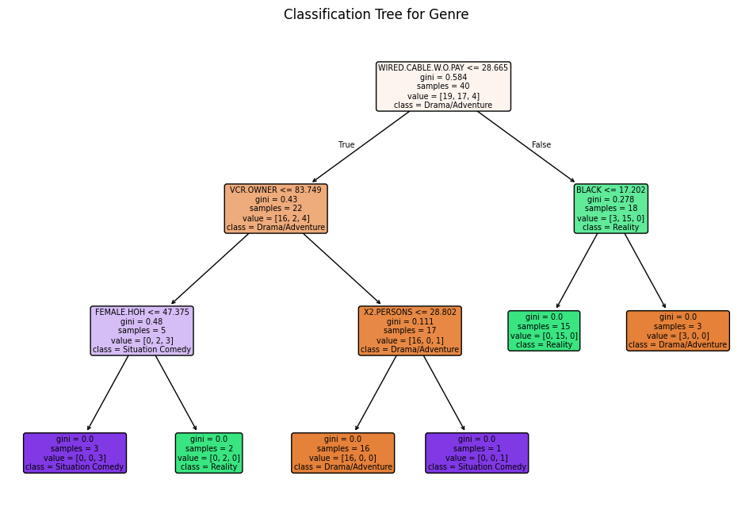
Regression Tree
# Prepare the predictor set and target variable.
# We want to model: PE ~ Genre + GRP using all columns except the first.
# Here, we select the 'Genre' and 'GRP' columns as predictors and 'PE' as the target.
X = nbc[['Genre', 'GRP']]
y = nbc['PE']
# If 'Genre' is categorical, convert it to dummy variables.
# This is necessary because scikit-learn models require numerical inputs.
X = pd.get_dummies(X, columns=['Genre'], drop_first=True)# Build and fit the regression tree.
reg_tree = DecisionTreeRegressor(max_depth=3, min_samples_split=2, random_state=42)
reg_tree.fit(X, y)
# Generate predictions for PE and store them in the DataFrame.
nbc['PEpred'] = reg_tree.predict(X)
# Plot the regression tree.
plt.figure(figsize=(16, 10), dpi = 300)
plot_tree(reg_tree, feature_names=X.columns, filled=True, rounded=True)
plt.title("Regression Tree for PE")
plt.show()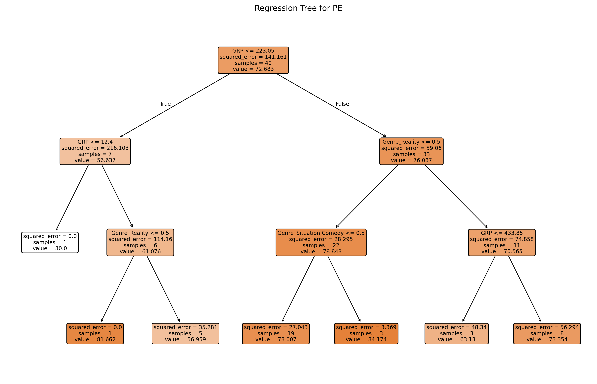
Boston Housing Data
# -------------------------------
# Data Loading and Visualization
# -------------------------------
# Load the Boston (demographics) data from URL.
boston = pd.read_csv("https://bcdanl.github.io/data/boston.csv")
boston
# boston_vis = boston.melt(id_vars=["medv"], var_name="var", value_name="value")
# Exclude the 'chas' variable from visualizations
# boston_vis = boston_vis[boston_vis['var'] != "chas"]
# Scatter plots with smoothing (using lowess)
# sns.lmplot(data=boston_vis, x="value", y="medv", col="var",
# col_wrap=3, height=4, scatter_kws={"s":10}, lowess=True)
# plt.show()
# Boxplot for each variable
# sns.catplot(data=boston_vis, y="value", col="var", kind="box", col_wrap=3)
# plt.show()
# Histogram for each variable
# g = sns.FacetGrid(boston_vis, col="var", col_wrap=3, height=4)
# g.map(plt.hist, "value", bins=20)
# plt.show()| crim | zn | indus | chas | nox | rm | age | dis | rad | tax | ptratio | black | lstat | medv | |
|---|---|---|---|---|---|---|---|---|---|---|---|---|---|---|
| 0 | 0.00632 | 18.0 | 2.31 | 0 | 0.538 | 6.575 | 65.2 | 4.0900 | 1 | 296 | 15.3 | 396.90 | 4.98 | 24.0 |
| 1 | 0.02731 | 0.0 | 7.07 | 0 | 0.469 | 6.421 | 78.9 | 4.9671 | 2 | 242 | 17.8 | 396.90 | 9.14 | 21.6 |
| 2 | 0.02729 | 0.0 | 7.07 | 0 | 0.469 | 7.185 | 61.1 | 4.9671 | 2 | 242 | 17.8 | 392.83 | 4.03 | 34.7 |
| 3 | 0.03237 | 0.0 | 2.18 | 0 | 0.458 | 6.998 | 45.8 | 6.0622 | 3 | 222 | 18.7 | 394.63 | 2.94 | 33.4 |
| 4 | 0.06905 | 0.0 | 2.18 | 0 | 0.458 | 7.147 | 54.2 | 6.0622 | 3 | 222 | 18.7 | 396.90 | 5.33 | 36.2 |
| ... | ... | ... | ... | ... | ... | ... | ... | ... | ... | ... | ... | ... | ... | ... |
| 501 | 0.06263 | 0.0 | 11.93 | 0 | 0.573 | 6.593 | 69.1 | 2.4786 | 1 | 273 | 21.0 | 391.99 | 9.67 | 22.4 |
| 502 | 0.04527 | 0.0 | 11.93 | 0 | 0.573 | 6.120 | 76.7 | 2.2875 | 1 | 273 | 21.0 | 396.90 | 9.08 | 20.6 |
| 503 | 0.06076 | 0.0 | 11.93 | 0 | 0.573 | 6.976 | 91.0 | 2.1675 | 1 | 273 | 21.0 | 396.90 | 5.64 | 23.9 |
| 504 | 0.10959 | 0.0 | 11.93 | 0 | 0.573 | 6.794 | 89.3 | 2.3889 | 1 | 273 | 21.0 | 393.45 | 6.48 | 22.0 |
| 505 | 0.04741 | 0.0 | 11.93 | 0 | 0.573 | 6.030 | 80.8 | 2.5050 | 1 | 273 | 21.0 | 396.90 | 7.88 | 11.9 |
506 rows × 14 columns
- crim
- per capita crime rate by town.
- zn
- proportion of residential land zoned for lots over 25,000 sq.ft.
- indus
- proportion of non-retail business acres per town.
- chas
- Charles River dummy variable (= 1 if tract bounds river; 0 otherwise).
- nox
- nitrogen oxides concentration (parts per 10 million).
- rm
- average number of rooms per dwelling.
- age
- proportion of owner-occupied units built prior to 1940.
- dis
- weighted mean of distances to five Boston employment centres.
- rad
- index of accessibility to radial highways.
- tax
- full-value property-tax rate per $10,000.
- ptratio
- pupil-teacher ratio by town.
- black
- \(1000\times (Bk - 0.63)^2\), where \(Bk\) is the proportion of blacks by town.
- lstat
- lower socioeconomic status of the population (percent).
- medv
- median value of owner-occupied homes in $1000s.
Splitting Data into Training and Testing
# Set a random seed for reproducibility (like R's set.seed)
np.random.seed(42120532)
train, test = train_test_split(boston, test_size=0.20, random_state=42120532)
X_train = train.drop(columns=["medv"])
y_train = train["medv"]
X_test = test.drop(columns=["medv"])
y_test = test["medv"]Prunning
Build the Regression Tree on the Training Data
# In scikit-learn, we can use min_impurity_decrease=0.005 for a similar effect.
tree_model = DecisionTreeRegressor(min_impurity_decrease=0.005, random_state=42)
# Fit the model using all predictors (all columns except 'medv')
tree_model.fit(X_train, y_train)
# Predict on training and test sets
y_train_pred = tree_model.predict(X_train)
y_test_pred = tree_model.predict(X_test)
# Calculate MSE
mse_train = mean_squared_error(y_train, y_train_pred)
mse_test = mean_squared_error(y_test, y_test_pred)
# Print the results
print(f"Training MSE: {mse_train:.3f}")
print(f"Test MSE: {mse_test:.3f}")
# Plot the initial regression tree
plt.figure(figsize=(12, 8))
plot_tree(tree_model, feature_names=X_train.columns, filled=True, rounded=True)
plt.title("Regression Tree for medv (Initial Fit)")
plt.show()Training MSE: 0.250
Test MSE: 13.859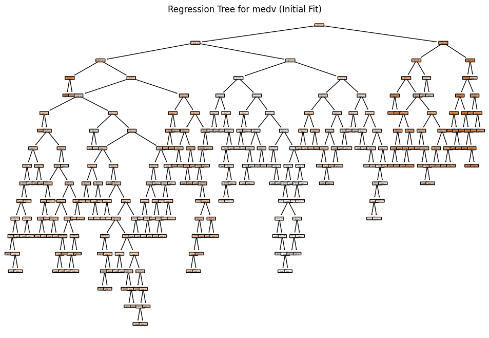
# In scikit-learn, we can use min_impurity_decrease=0.005 for a similar effect.
tree_model = DecisionTreeRegressor(max_depth=3, min_impurity_decrease=0.005, random_state=42)
# Fit the model using all predictors (all columns except 'medv')
tree_model.fit(X_train, y_train)
# Plot the initial regression tree
plt.figure(figsize=(9, 8), dpi = 300)
plot_tree(tree_model, feature_names=X_train.columns, filled=True, rounded=True)
plt.title("Regression Tree for medv (Initial Fit)")
plt.show()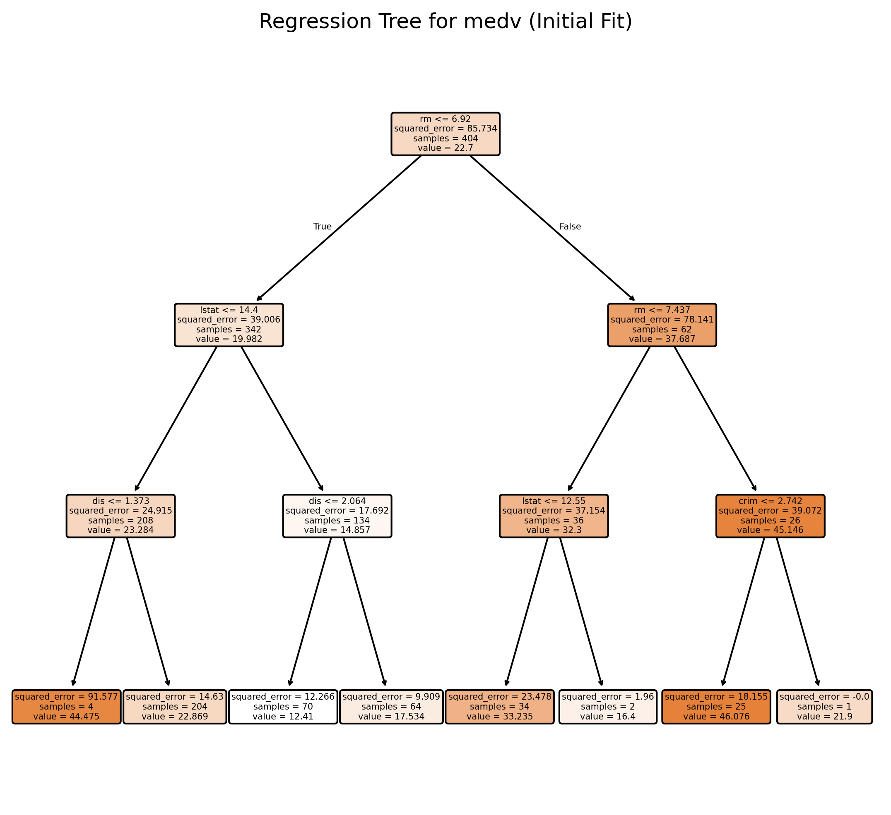
Cross-Validation and Cost Complexity Pruning (CV Tree)
# Obtain the cost-complexity pruning path from the initial tree
path = tree_model.cost_complexity_pruning_path(X_train, y_train) # Get candidate ccp_alpha values and corresponding impurities
ccp_alphas = path.ccp_alphas # Candidate pruning parameters (alpha values)
impurities = path.impurities # Impurity values at each candidate alpha
# Exclude the maximum alpha value to avoid the trivial tree (a tree with only the root)
ccp_alphas = ccp_alphas[:-1] # Remove the last alpha value which would prune the tree to a single node
# Set up 10-fold cross-validation
kf = KFold(n_splits=10, shuffle=True, random_state=42) # Initialize 10-fold CV with shuffling and fixed random state
cv_scores = [] # List to store mean cross-validated scores (negative MSE)
leaf_nodes = [] # List to record the number of leaves for each pruned tree
sse = [] # List to record the sum of squared errors (SSE) on the training set
# Loop over each candidate alpha value to evaluate its performance
for ccp_alpha in ccp_alphas:
# Create a DecisionTreeRegressor with the current ccp_alpha and other specified parameters
clf = DecisionTreeRegressor(random_state=42,
ccp_alpha=ccp_alpha,
min_impurity_decrease=0.005)
# Perform 10-fold cross-validation and compute negative mean squared error (MSE)
scores = cross_val_score(clf, X_train, y_train,
cv=kf, scoring="neg_mean_squared_error")
cv_scores.append(np.mean(scores)) # Append the mean CV score for the current alpha
# Fit the tree on the training data to record additional metrics
clf.fit(X_train, y_train)
leaf_nodes.append(clf.get_n_leaves()) # Record the number of leaf nodes in the tree
# Compute SSE (sum of squared errors) on the training set
preds = clf.predict(X_train) # Predict target values on training data
sse.append(np.sum((y_train - preds) ** 2)) # Calculate and record SSE for training set
# Select the best alpha based on the highest (least negative) mean CV score
best_alpha = ccp_alphas[np.argmax(cv_scores)] # Identify the alpha with the best CV performance
print("Best alpha:", best_alpha) # Print the best alpha value
# Train the final pruned tree using the best alpha found
final_tree = DecisionTreeRegressor(random_state=42,
ccp_alpha=best_alpha,
min_impurity_decrease=0.005)
final_tree.fit(X_train, y_train) # Fit the final model on the training dataBest alpha: 0.2329619817674513DecisionTreeRegressor(ccp_alpha=np.float64(0.2329619817674513),
min_impurity_decrease=0.005, random_state=42)In a Jupyter environment, please rerun this cell to show the HTML representation or trust the notebook. On GitHub, the HTML representation is unable to render, please try loading this page with nbviewer.org.
DecisionTreeRegressor(ccp_alpha=np.float64(0.2329619817674513),
min_impurity_decrease=0.005, random_state=42)len(ccp_alphas)146Evaluate the Final Tree on the Test Data
preds = final_tree.predict(test.drop(columns=["medv"]))
mse = mean_squared_error(y_test, preds)
print("Test MSE:", mse)Test MSE: 12.755442672992647Prunned Tree
# Plot the pruned tree.
plt.figure(figsize=(16, 12), dpi=300)
plot_tree(final_tree, feature_names=X_train.columns, filled=True, rounded=True)
plt.title("Pruned Regression Tree for medv")
plt.show()
# Summary of the final tree
print("Number of leaves in the pruned tree:", final_tree.get_n_leaves())
print("Tree depth:", final_tree.get_depth())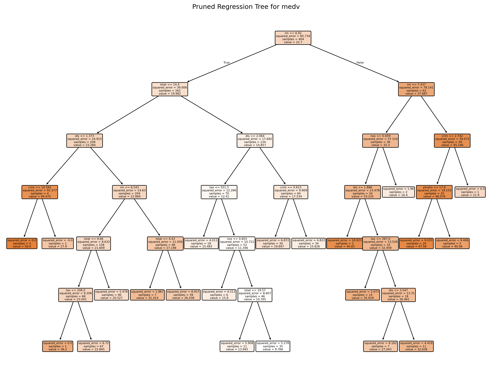
Number of leaves in the pruned tree: 21
Tree depth: 6# Plot the average cross-validated MSE against the number of leaf nodes
negative_cv_scores = -np.array(cv_scores)
plt.figure(figsize=(8, 6), dpi=150)
plt.plot(leaf_nodes, negative_cv_scores, marker='o', linestyle='-')
plt.axvline(x=final_tree.get_n_leaves(), color='red', linestyle='--', label='Leaf Nodes = 21') # Add vertical line at 21 leaf nodes
plt.xlabel("Number of Leaf Nodes")
plt.ylabel("Mean CV MSE")
plt.title("CV Error vs. Number of Leaf Nodes")
plt.grid(True)
plt.show()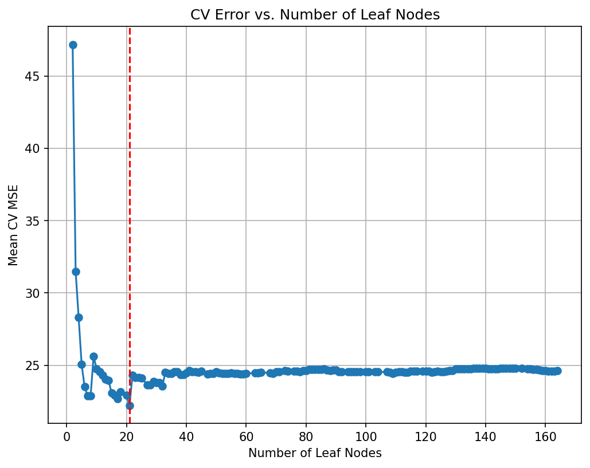
# Plot the SSE on the training against the number of leaf nodes
plt.figure(figsize=(8, 6), dpi=150)
plt.plot(leaf_nodes, sse, marker='o', linestyle='-')
plt.xlabel("Number of Leaf Nodes")
plt.ylabel("SSE")
plt.title("SSE vs. Number of Leaf Nodes")
plt.grid(True)
plt.show()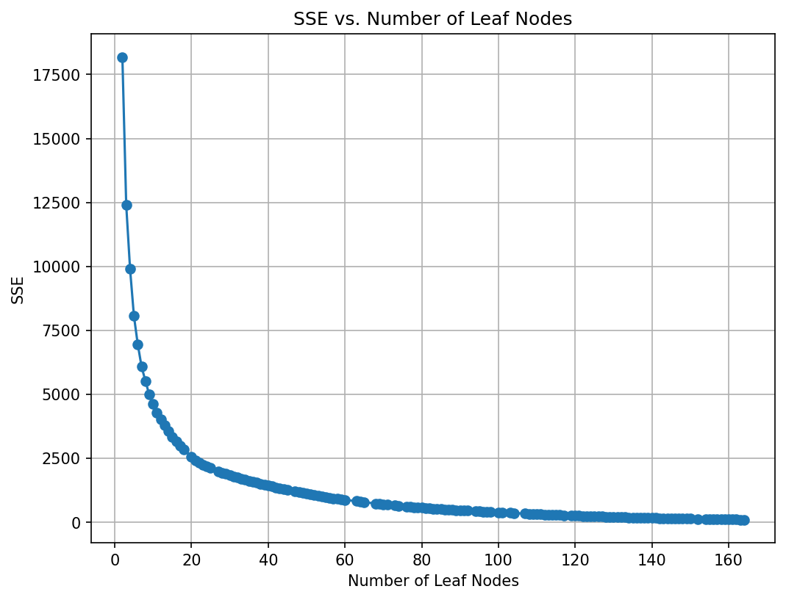
Random Forest
# Suppose df is your dataset and 'medv' is the response variable.
# Split into training and testing sets (similar to the R code)
X = boston.drop(columns=["medv"]) # All predictors
y = boston["medv"]
X_train, X_test, y_train, y_test = train_test_split(X, y, test_size=0.20, random_state=42)
# Build the Random Forest model
# max_features=13 means that at each split the algorithm randomly considers 13 predictors.
rf = RandomForestRegressor(max_features=5, # Use 13 features at each split
n_estimators=500, # Number of trees in the forest
random_state=42,
oob_score=True) # Use out-of-bag samples to estimate error
rf.fit(X_train, y_train)
# Print the model details
print("Random Forest Model:")
print(rf)
# Output the model details (feature importances, OOB score, etc.)
print("Out-of-bag score:", rf.oob_score_) # A rough estimate of generalization error
# Generate predictions on training and testing sets
y_train_pred = rf.predict(X_train)
y_test_pred = rf.predict(X_test)
# Calculate Mean Squared Errors (MSE) for both sets
train_mse = mean_squared_error(y_train, y_train_pred)
test_mse = mean_squared_error(y_test, y_test_pred)
print("Train MSE:", train_mse)
print("Test MSE:", test_mse)
# Optional: Plot predicted vs. observed values for test data
# plt.figure(figsize=(8,6), dpi=300)
# plt.scatter(y_test, y_test_pred, alpha=0.7)
# plt.plot([min(y_test), max(y_test)], [min(y_test), max(y_test)], 'r--')
# plt.xlabel("Observed medv")
# plt.ylabel("Predicted medv")
# plt.title("Random Forest: Observed vs. Predicted Values")
# plt.show()Random Forest Model:
RandomForestRegressor(max_features=5, n_estimators=500, oob_score=True,
random_state=42)
Out-of-bag score: 0.864624851178444
Train MSE: 1.586040475049504
Test MSE: 9.365789512941221# Define the grid of hyperparameters:
# - min_samples_leaf is the minimum number of samples in a terminal node.
param_grid = {
"max_features": list(range(3, 15, 2)),
"min_samples_leaf": [5]
}
# Initialize the RandomForestRegressor:
# - n_estimators is set to 50 (equivalent to num.trees)
# - random_state is set for reproducibility.
# rf = RandomForestRegressor(n_estimators=50, random_state=1917)
rf = RandomForestRegressor(n_estimators=500, # Number of trees in the forest
random_state=42,
oob_score=True) # Use out-of-bag samples to estimate error
# Set up 10-fold cross-validation and GridSearch over the parameters
grid_search = GridSearchCV(
estimator=rf,
param_grid=param_grid,
cv=10,
scoring="neg_mean_squared_error",
return_train_score=True,
n_jobs=-1,
verbose=1
)
# Fit the grid search on the data
grid_search.fit(X_train, y_train)
# Extract the best parameters
print("Best Parameters:", grid_search.best_params_)
# To replicate the ggplot visualization from R, we plot the grid search results.
results = pd.DataFrame(grid_search.cv_results_)
plt.figure(figsize=(8, 6))
plt.errorbar(
results["param_max_features"].astype(int),
-results["mean_test_score"],
yerr=results["std_test_score"],
fmt="o-",
capsize=5
)
plt.title("Grid Search CV Results")
plt.xlabel("max_features (mtry equivalent)")
plt.ylabel("Mean Squared Error")
plt.grid(True)
plt.show()
Fitting 10 folds for each of 6 candidates, totalling 60 fits
Best Parameters: {'max_features': 7, 'min_samples_leaf': 5}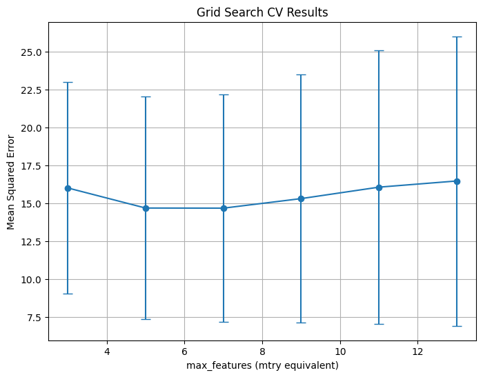
Variable Importance
# Get feature importances from the model (equivalent to importance(bag.boston) in R)
importances = rf.feature_importances_
feature_names = X_train.columns
print("Variable Importances:")
for name, imp in zip(feature_names, importances):
print(f"{name}: {imp:.4f}")
# Plot the feature importances, similar to varImpPlot(bag.boston) in R
# Sort the features by importance for a nicer plot.
indices = np.argsort(importances)[::-1]
plt.figure(figsize=(10, 6), dpi=150)
plt.title("Variable Importances")
plt.bar(range(len(feature_names)), importances[indices], align='center')
plt.xticks(range(len(feature_names)), feature_names[indices], rotation=90)
plt.xlabel("Variables")
plt.ylabel("Importance")
plt.tight_layout()
plt.show()Variable Importances:
crim: 0.0609
zn: 0.0039
indus: 0.0468
chas: 0.0063
nox: 0.0549
rm: 0.3493
age: 0.0236
dis: 0.0560
rad: 0.0080
tax: 0.0266
ptratio: 0.0569
black: 0.0177
lstat: 0.2892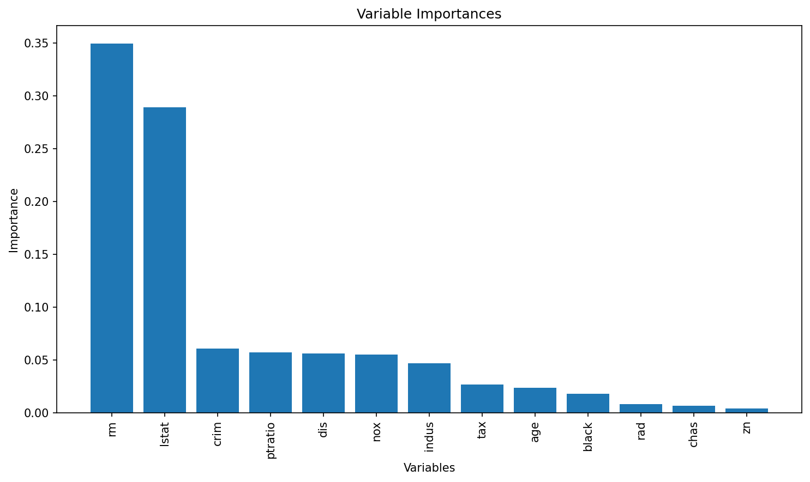
PartialDependenceDisplay.from_estimator(rf, X_train, ['rm'], kind='both')NameError: name 'PartialDependenceDisplay' is not definedPartialDependenceDisplay.from_estimator(rf, X_train, ['lstat'], kind='individual')<sklearn.inspection._plot.partial_dependence.PartialDependenceDisplay at 0x7b1287765790>disp = PartialDependenceDisplay.from_estimator(rf, X_train, ['lstat'], kind='both')
# Access the line representing the average PDP (it's typically the last Line2D object)
# and change its color manually
for ax in disp.axes_.ravel():
lines = ax.get_lines()
if lines: # In case the axis has line objects
# The last line is usually the average PDP
pdp_line = lines[-1]
pdp_line.set_color("red") # Change to any color you like
plt.show()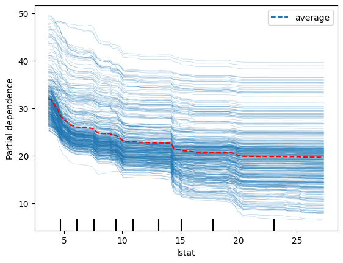
disp = PartialDependenceDisplay.from_estimator(rf, X_train, ['crim'], kind='both')
# Access the line representing the average PDP (it's typically the last Line2D object)
# and change its color manually
for ax in disp.axes_.ravel():
lines = ax.get_lines()
if lines: # In case the axis has line objects
# The last line is usually the average PDP
pdp_line = lines[-1]
pdp_line.set_color("red") # Change to any color you like
plt.show()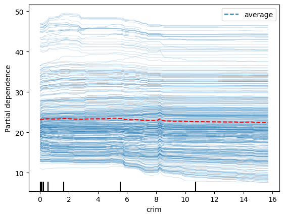
Gradient Boosting
# Define the grid of hyperparameters
param_grid = {
"n_estimators": list(range(20, 201, 20)), # nrounds: 20, 40, ..., 200
"learning_rate": [0.025, 0.05, 0.1, 0.3], # eta
"gamma": [0], # gamma
"max_depth": [1, 2, 3, 4],
"colsample_bytree": [1],
"min_child_weight": [1],
"subsample": [1]
}
# Initialize the XGBRegressor with the regression objective and fixed random state for reproducibility
xgb_reg = XGBRegressor(objective="reg:squarederror", random_state=1937, verbosity=1)
# Set up GridSearchCV with 10-fold cross-validation; scoring is negative MSE
grid_search = GridSearchCV(
estimator=xgb_reg,
param_grid=param_grid,
scoring="neg_mean_squared_error",
cv=10,
verbose=1 # Adjust verbosity as needed
)
# Fit the grid search
grid_search.fit(X_train, y_train)
# Train the final model using the best parameters (grid_search.best_estimator_ is already refit on entire data)
final_model = grid_search.best_estimator_
# Plot variable importance using XGBoost's plot_importance function
plt.figure(figsize=(10, 8))
plot_importance(final_model)
plt.title("Variable Importance")
plt.show()
# Calculate MSE on the test data
y_pred = final_model.predict(X_test)
test_mse = mean_squared_error(y_test, y_pred)
print("Test MSE:", test_mse)
# Print the best parameters found by GridSearchCV
best_params = grid_search.best_params_
print("Best parameters:", best_params)Fitting 10 folds for each of 160 candidates, totalling 1600 fits
Test MSE: 8.542297394900933
Best parameters: {'colsample_bytree': 1, 'gamma': 0, 'learning_rate': 0.1, 'max_depth': 3, 'min_child_weight': 1, 'n_estimators': 160, 'subsample': 1}<Figure size 1000x800 with 0 Axes>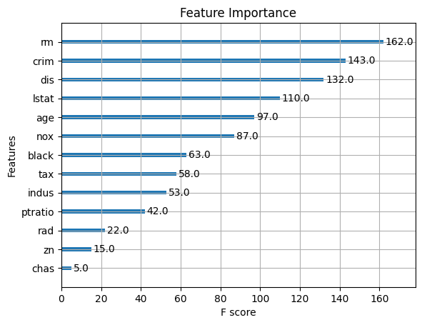